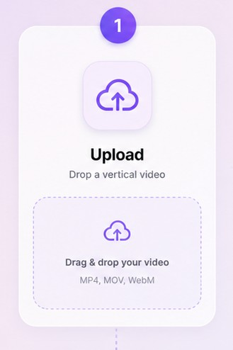
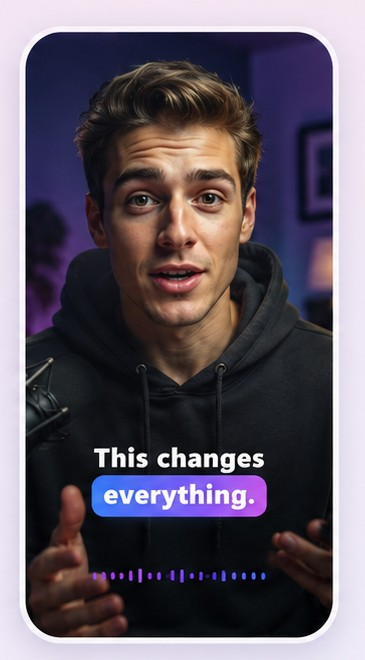
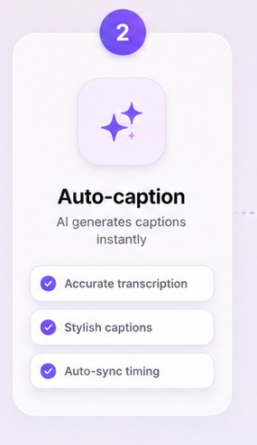
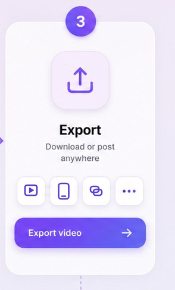

Clip hochladen, Style wählen und das MP4 mit animierten Untertiteln Wort für Wort herunterladen. Kostenlos während der Beta.
Dein Video bleibt auf deinem Gerät – nur die Tonspur wird zur Transkription gesendet. Kein Konto nötig; nach deiner E-Mail fragen wir erst vor dem Download.
Von knalligen Karaoke-Untertiteln bis zu ruhigen Untertiteln. Tippe auf einen Style und sieh ihn an einem Beispielvideo.
Drei Schritte, keine Schnittkenntnisse, nichts zu installieren.





CaptionRush ist ein kostenloses Browser-Tool, das die Sprache in deinem Video in animierte Untertitel verwandelt – Wort für Wort, für Instagram Reels, TikTok und YouTube Shorts.
Korrigiere jedes Wort und sein Timing direkt im Editor.
Von knalligen Pop-Captions bis zu ruhigen Untertiteln – Wechsel mit einem Klick.
Deutsch, Englisch, Französisch, Italienisch, Spanisch und mehr. Die gesprochene Sprache wird automatisch erkannt.
Ein KI-Korrekturdurchgang berichtigt falsch verstandene Namen und Orte. Für knifflige Wörter trägst du eigene Namen & Begriffe ein.
Die optionale KI-Hervorhebung betont wichtige Wörter, setzt Emojis und dezente Zooms.
Erhalte einen Vorschlag für Post-Text und Hashtags, in der Sprache deines Videos.
Nur die Tonspur geht zur Transkription; das MP4 entsteht in deinem Browser.
Ein fertiges MP4 ohne Wasserzeichen oder Untertiteldateien für dein Schnittprogramm oder YouTube.
Starte kostenlos. Pläne mit mehr Transkriptionsminuten folgen.
Beta – alles kostenlos, solange wir bauen.
Ja – kostenlos während der Beta, ohne Konto. Untertitel erstellen und als MP4 ohne Wasserzeichen, SRT und VTT exportieren; vor dem ersten Video-Download fragen wir (freiwillig, du kannst überspringen) nach deiner E-Mail. Creator- und Pro-Pläne mit mehr Transkriptionsminuten folgen bald. Gratis bleibt für die ersten 2 Videos pro Tag ohne Wasserzeichen; ab dem 3. Video pro Tag erscheint ein kleines Wasserzeichen. Bezahlpläne haben nie ein Wasserzeichen.
Lade dein Video auf dieser Seite hoch, prüfe die Untertitel, wähle einen Style und lade das MP4 herunter. Die Untertitel sind ins Video eingebrannt – du kannst die Datei direkt als Reel, TikTok oder Short posten.
16 Sprachen, automatisch erkannt: Deutsch, Englisch, Spanisch, Französisch, Italienisch, Portugiesisch, Niederländisch, Polnisch, Türkisch, Russisch, Ukrainisch, Japanisch, Koreanisch, Chinesisch, Arabisch und Hindi. Du kannst die Sprache auch selbst wählen.
Ja, Deutsch wird voll unterstützt. Ein KI-Korrekturdurchgang hilft bei Namen, Orten und Dialektwörtern. Bei Schweizerdeutsch und anderen starken Dialekten können trotzdem Fehler vorkommen – prüfe die Untertitel deshalb vor dem Export und korrigiere einzelne Wörter im Editor.
CaptionRush nutzt das Sprachmodell Whisper large-v3 plus einen KI-Korrekturdurchgang für Namen, Orte und Dialekte. Knifflige Namen oder Markenbegriffe trägst du im Feld «Names & terms» ein. Das läuft auf dem Server (nichts herunterzuladen), und jedes Wort kannst du im Editor korrigieren.
Ein MP4 mit eingebrannten Untertiteln (standardmässig 1080p, bereit zum Posten), SRT- und VTT-Untertiteldateien für Schnittprogramme oder YouTube sowie ein reines TXT-Transkript.
Ja. CaptionRush läuft im Browser deines Handys, du musst keine App installieren, und das MP4 entsteht direkt auf dem Gerät. Kann dein Browser ein bestimmtes Video nicht exportieren, lädst du trotzdem die SRT- oder VTT-Datei herunter.
Nein. CaptionRush läuft in deinem Browser. Video hochladen, Style wählen, exportieren – keine App, kein Plugin.
Nein. Nur die Tonspur wird zur Transkription gesendet, und wir speichern weder Ton noch Transkript auf unseren Servern. Das Video selbst wird lokal in deinem Browser gerendert und exportiert. Details in der Datenschutzerklärung.
Bezahlpläne gibt es noch nicht – CaptionRush ist während der Beta kostenlos. Wenn Creator und Pro starten, sind sie monatlich kündbar.
Deine ersten Untertitel in Sekunden. Kostenlos während der Beta – ohne Konto.
or drop it here · MP4, MOV or WebM
Replace video
Drag the caption in the preview to fine-tune its height.
Long captions break into more, shorter captions instead of shrinking. Only a single word too long for the frame gets smaller.
Brand default: open a template's ⋯ menu → “Use for every new video”.